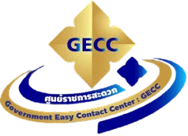

ด้านกายภาพ
15 ข้อSelf Checklist ต้องดำเนินการครบทุกข้อ จึงเข้าสู่การตรวจประเมินในลำดับต่อไป
เตรียมความพร้อม GECC ปี 2570 ไปด้วยกัน
เข้าใจเกณฑ์ เตรียมหลักฐาน และพัฒนาไปกับทีมพี่เลี้ยง
รวมทุกขั้นตอนการเรียนรู้ไว้ในพื้นที่เดียว

GOVERNMENT EASY CONTACT CENTER2570อ่านแนวทาง ทบทวนจากเอกสารต้นฉบับ แล้วนำไปใช้กับหน่วยงานของคุณ
บทเรียนนี้เรียบเรียงเพื่อช่วยอ่านเอกสาร การบันทึกว่าอ่านแล้วไม่ใช่ผลสอบหรือผลรับรองมาตรฐาน
ขับเคลื่อนการพัฒนาอย่างเป็นระบบ
เส้นทางพัฒนาสู่ความพร้อม
คณะทำงานตามคำสั่งแต่งตั้ง
เครือข่ายความรู้และประสบการณ์ 6 ทีม
แจ้งความประสงค์ตามแผนโครงการ
จากความตั้งใจของหน่วยงาน
สู่ประสบการณ์ที่ดีของประชาชน
พื้นที่เรียนรู้และเตรียมความพร้อมภายใต้ Sisaket Smart Government Model : GECC Project เพื่อยกระดับคุณภาพบริการประชาชน และสนับสนุนให้หน่วยงานภาครัฐในจังหวัดศรีสะเกษพัฒนาอย่างเป็นระบบ
สร้างบริการที่สะดวก รวดเร็ว โปร่งใส และตอบสนองความต้องการของผู้รับบริการ
เชื่อมการเรียนรู้ การประเมินตนเอง การพัฒนาพื้นที่ และการติดตามผล โดยมีเครือข่ายพี่เลี้ยงร่วมสนับสนุน
สำหรับใคร? ส่วนราชการ อำเภอ หน่วยงานภาครัฐ และคณะทำงานที่เตรียมความพร้อมเข้าสู่มาตรฐาน GECC จังหวัดศรีสะเกษ
ภาพรวมหลักเกณฑ์ GECC ปี 2570
อ่านควบคู่เอกสารฉบับเต็มเพื่อใช้ในการประเมิน
Self Checklist ต้องดำเนินการครบทุกข้อ จึงเข้าสู่การตรวจประเมินในลำดับต่อไป
Checklist 10 ข้อ รวม 100 คะแนน และบรรยายความโดดเด่น 10 ข้อ รวม 100 คะแนน
ประเมิน 3 ข้อ โดยคะแนนด้านคุณภาพและผลลัพธ์รวมกันเต็ม 300 คะแนน
ระดับการรับรอง
ผ่านกายภาพครบ 15 ข้อ
ช่วงรับสมัครตามแบบประเมินความพร้อม: 16 พฤศจิกายน – 25 ธันวาคม 2569การคัดกรองเอกสารต้องได้ไม่ต่ำกว่า 240 คะแนน (80%) · การรับรองเป็นไปตามกระบวนการทางการ
↗เข้าใจภาพใหญ่ ก่อนลงมือเปลี่ยนแปลง
เลือกแต่ละกลยุทธ์เพื่อสำรวจแนวทางพัฒนา
จากแผนที่ความพร้อม
สู่ระบบบริการที่ประชาชนไว้วางใจ
แผนดำเนินงาน 6 สัปดาห์ พร้อมช่วงเตรียมความพร้อม
ตุลาคม – ธันวาคม 2569 เพื่อเตรียมสมัคร GECC ปี 2570
แต่งตั้งคณะทำงาน และ Pre GECC Kick Off: ผู้ว่าฯ พบ Mentor ทบทวนเกณฑ์ แบบสำรวจ 3 ประเภท แผนดำเนินงาน และแนวทางติดตามงาน Mentor Network
แผนนี้แสดงลำดับการเตรียมความพร้อมตามโครงการ ไม่ใช่ประกาศกำหนดวันรับสมัครหรือผลรับรองมาตรฐาน โปรดติดตามกำหนดการยืนยันจากคณะทำงาน
ห้องประชุมอาคารส่งเสริมสุขภาพ
สำนักงานสาธารณสุขจังหวัดศรีสะเกษ
หัวกำหนดการระบุ 08.30–12.00 น.
ตารางกิจกรรมระบุลงทะเบียน 08.00–09.00 น.
กำหนดการอาจปรับเปลี่ยนตามความเหมาะสม
ใช้รายการนี้เป็นผู้ช่วยทบทวนงาน
ก่อนให้ทีมพี่เลี้ยงตรวจความครบถ้วน
บันทึกเฉพาะในเบราว์เซอร์นี้
ไม่ใช่ผลประเมินหรือการส่งใบสมัคร
23 พี่เลี้ยง · 6 ทีม · 28 หน่วยงานที่แจ้งความประสงค์
ค้นหากลุ่มหน่วยงาน และทำความรู้จักเครือข่ายการพัฒนา
อ้างอิง TIMELINE SISAKET GECC (update) หน้า 14–15 และภาพประกอบที่ได้รับ · รายการนี้เป็นเครือข่ายการพัฒนา ไม่ใช่ผลรับรองมาตรฐาน
คณะทำงานขับเคลื่อนการดำเนินการศูนย์ราชการสะดวก GECC
จังหวัดศรีสะเกษ ตามคำสั่งลงวันที่ 13 กันยายน 2569
กลุ่มภารกิจด้านเศรษฐกิจ
บูรณาการ สนับสนุน และขับเคลื่อนหน่วยงานเภสัชกรชำนาญการพิเศษ
สำนักงานสาธารณสุขจังหวัดศรีสะเกษ
เภสัชกรชำนาญการพิเศษ
สำนักงานสาธารณสุขจังหวัดศรีสะเกษ
01บูรณาการ สนับสนุน และขับเคลื่อนการสมัครรับรองมาตรฐาน GECC ของส่วนราชการ อำเภอ และหน่วยงานภาครัฐ
02ประเมินและติดตามผลการดำเนินการ เพื่อรักษามาตรฐานการบริการ
03กำหนดเป้าหมายการพัฒนาที่อำนวยความสะดวก โปร่งใส และตอบสนองประชาชนอย่างมีประสิทธิภาพ
04ปฏิบัติหน้าที่อื่นตามที่ผู้ว่าราชการจังหวัดศรีสะเกษมอบหมาย
เอกสาร หลักเกณฑ์ และเครื่องมือที่ใช้จริง
รวมไว้ให้เข้าถึงได้ในที่เดียว
รวบรวมจากเว็บไซต์ GECC 2570 จังหวัดศรีสะเกษและเอกสารที่ให้มา เอกสารบน Google Drive อาจต้องใช้สิทธิ์เข้าถึงของเจ้าของไฟล์
เว็บไซต์ต้นทาง ↗เริ่มจาก 8 กลยุทธ์เพื่อเข้าใจภาพรวม จากนั้นเปิดเส้นทางการเรียนรู้ในแต่ละสัปดาห์ และอ่านหลักเกณฑ์ GECC 2570 ควบคู่กับแบบประเมินความพร้อมในคลังความรู้
แผนโครงการระบุ 3 ประเภท ได้แก่ แบบสำรวจความพึงพอใจ แบบสำรวจความต้องการ และแบบสำรวจความเชื่อมั่น ให้ตรวจรูปแบบและวิธีใช้กับทีมพี่เลี้ยงก่อนดำเนินการ
รายการบันทึกไว้เฉพาะเบราว์เซอร์และอุปกรณ์ที่ใช้อยู่ ไม่มีการส่งให้คณะทำงาน และไม่ใช่การสมัครรับรอง GECC หากล้างข้อมูลเบราว์เซอร์ รายการที่บันทึกไว้อาจหายไป
ดูรายชื่อพี่เลี้ยง 23 คนและกลุ่มหน่วยงาน 28 แห่งในส่วนเครือข่าย กำหนดประชุมครั้งที่ 1 คือวันที่ 29 ตุลาคม 2569 ส่วนแผนดำเนินงาน 6 สัปดาห์แสดงลำดับกิจกรรมช่วงพฤศจิกายน–ธันวาคม ให้ติดตามวันจัดกิจกรรมแต่ละครั้งจากคณะทำงาน
ร่วมพัฒนาบริการภาครัฐจังหวัดศรีสะเกษ
ให้ทุกการติดต่อราชการ เป็นประสบการณ์ที่ดีของประชาชน